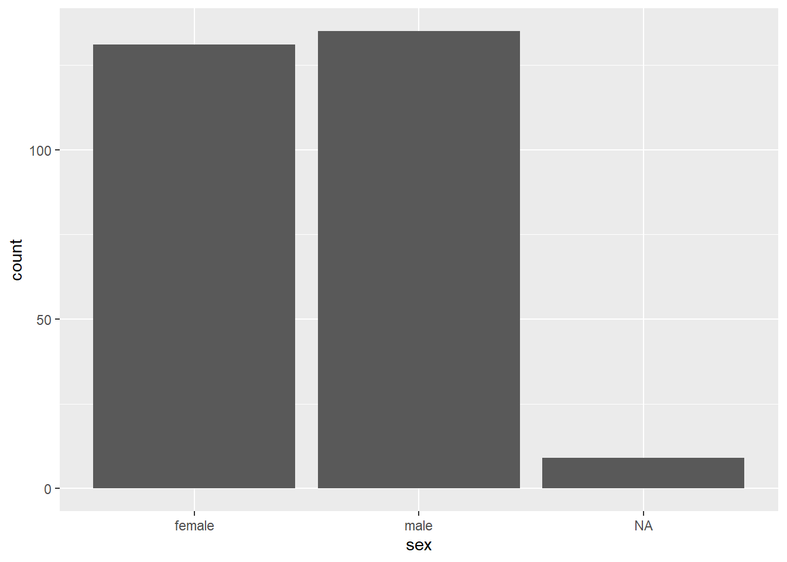
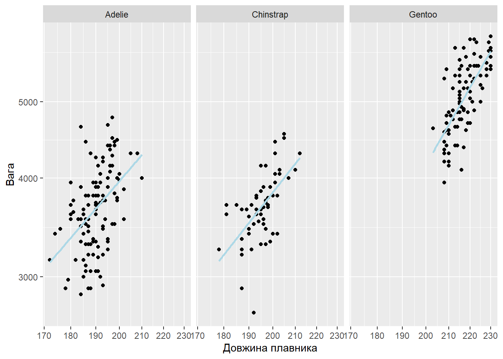
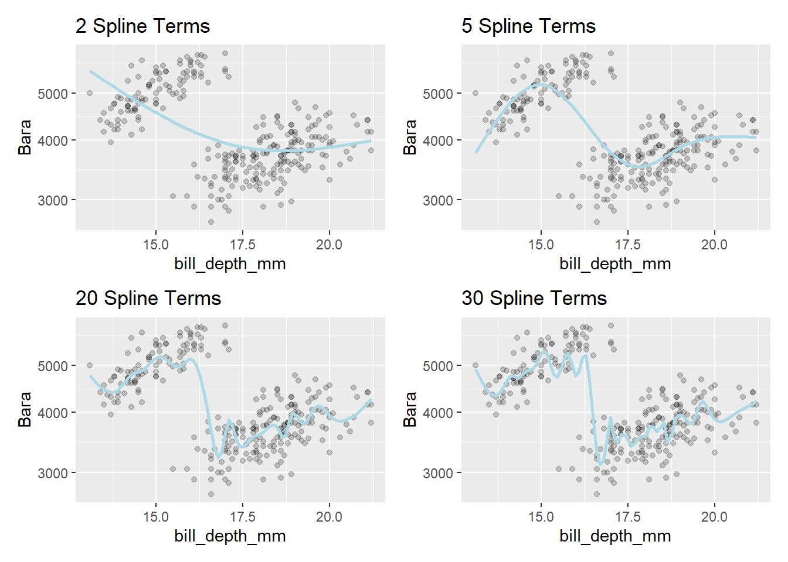
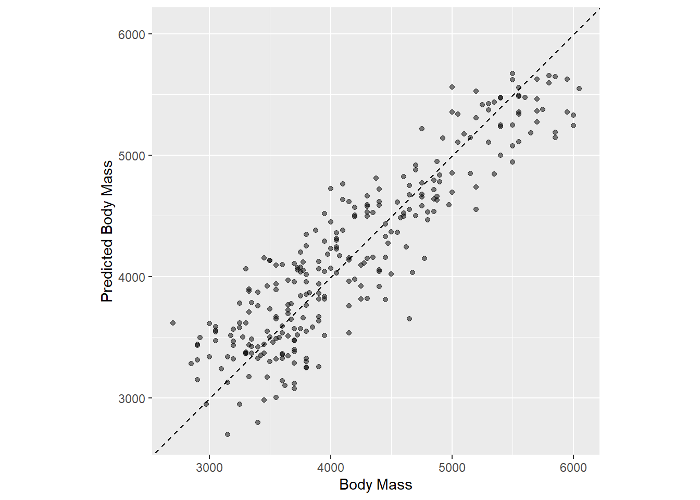

1 Tidymodels
Tidymodels - фреймворк для побудови моделей машинного навчання за допомогою мови програмування R.
Розглянемо датасет з пінгвінами, який прийшов на заміну класичному датасету про іриси.
library(palmerpenguins)
penguins
## # A tibble: 344 x 8
## species island bill_length_mm bill_depth_mm flipper_length_mm body_mass_g
## <fct> <fct> <dbl> <dbl> <int> <int>
## 1 Adelie Torgersen 39.1 18.7 181 3750
## 2 Adelie Torgersen 39.5 17.4 186 3800
## 3 Adelie Torgersen 40.3 18 195 3250
## 4 Adelie Torgersen NA NA NA NA
## 5 Adelie Torgersen 36.7 19.3 193 3450
## 6 Adelie Torgersen 39.3 20.6 190 3650
## 7 Adelie Torgersen 38.9 17.8 181 3625
## 8 Adelie Torgersen 39.2 19.6 195 4675
## 9 Adelie Torgersen 34.1 18.1 193 3475
## 10 Adelie Torgersen 42 20.2 190 4250
## # ... with 334 more rows, and 2 more variables: sex <fct>, year <int>
glimpse(penguins)
## Rows: 344
## Columns: 8
## $ species <fct> Adelie, Adelie, Adelie, Adelie, Adelie, Adelie, Ade~
## $ island <fct> Torgersen, Torgersen, Torgersen, Torgersen, Torgers~
## $ bill_length_mm <dbl> 39.1, 39.5, 40.3, NA, 36.7, 39.3, 38.9, 39.2, 34.1,~
## $ bill_depth_mm <dbl> 18.7, 17.4, 18.0, NA, 19.3, 20.6, 17.8, 19.6, 18.1,~
## $ flipper_length_mm <int> 181, 186, 195, NA, 193, 190, 181, 195, 193, 190, 18~
## $ body_mass_g <int> 3750, 3800, 3250, NA, 3450, 3650, 3625, 4675, 3475,~
## $ sex <fct> male, female, female, NA, female, male, female, mal~
## $ year <int> 2007, 2007, 2007, 2007, 2007, 2007, 2007, 2007, 200~
penguins <- penguins %>%
relocate(body_mass_g)Він добре підходить як під задачі регресії, так і під задачі класифікації.
1.1 Розбиття вибірки на тестову та навчальну.
Звичайне розбиття
set.seed(2022)
penguins_split <- initial_split(penguins, prop = .8)
penguins_split
## <Analysis/Assess/Total>
## <275/69/344>
penguins_train <- training(penguins_split)
penguins_test <- testing(penguins_split)
dim(penguins_train)
## [1] 275 8
set.seed(2022)
penguins_split <- initial_split(penguins, prop = .8, strata = sex)
penguins_split
## <Analysis/Assess/Total>
## <275/69/344>
penguins_train <- training(penguins_split)
penguins_test <- testing(penguins_split)
dim(penguins_train)
## [1] 275 8
penguins_train %>%
count(sex)
## # A tibble: 3 x 2
## sex n
## <fct> <int>
## 1 female 131
## 2 male 135
## 3 <NA> 9
penguins_test %>%
count(sex)
## # A tibble: 3 x 2
## sex n
## <fct> <int>
## 1 female 34
## 2 male 33
## 3 <NA> 21.2 Побудова моделей за допомогою Tidymodels
linear_reg() %>%
set_engine("lm") %>%
translate()
## Linear Regression Model Specification (regression)
##
## Computational engine: lm
##
## Model fit template:
## stats::lm(formula = missing_arg(), data = missing_arg(), weights = missing_arg())
linear_reg(penalty = 1) %>%
set_engine("glmnet") %>%
translate()
## Linear Regression Model Specification (regression)
##
## Main Arguments:
## penalty = 1
##
## Computational engine: glmnet
##
## Model fit template:
## glmnet::glmnet(x = missing_arg(), y = missing_arg(), weights = missing_arg(),
## family = "gaussian")
linear_reg() %>%
set_engine("stan") %>%
translate()
## Linear Regression Model Specification (regression)
##
## Computational engine: stan
##
## Model fit template:
## rstanarm::stan_glm(formula = missing_arg(), data = missing_arg(),
## weights = missing_arg(), family = stats::gaussian, refresh = 0)
lm_model <-
linear_reg() %>%
set_engine("lm")
lm_form_fit <-
lm_model %>%
fit(body_mass_g ~ bill_length_mm + bill_depth_mm, data = penguins_train)
lm_xy_fit <-
lm_model %>%
fit_xy(
x = penguins_train %>% select(bill_length_mm, bill_depth_mm),
y = penguins_train %>% pull(body_mass_g)
)
lm_form_fit
## parsnip model object
##
##
## Call:
## stats::lm(formula = body_mass_g ~ bill_length_mm + bill_depth_mm,
## data = data)
##
## Coefficients:
## (Intercept) bill_length_mm bill_depth_mm
## 3698.15 69.79 -150.48
lm_xy_fit
## parsnip model object
##
##
## Call:
## stats::lm(formula = ..y ~ ., data = data)
##
## Coefficients:
## (Intercept) bill_length_mm bill_depth_mm
## 3698.15 69.79 -150.48
lm_form_fit %>%
extract_fit_engine()
##
## Call:
## stats::lm(formula = body_mass_g ~ bill_length_mm + bill_depth_mm,
## data = data)
##
## Coefficients:
## (Intercept) bill_length_mm bill_depth_mm
## 3698.15 69.79 -150.48
lm_form_fit %>%
extract_fit_engine() %>%
vcov()
## (Intercept) bill_length_mm bill_depth_mm
## (Intercept) 240286.265 -2494.52933 -7522.27997
## bill_length_mm -2494.529 45.19213 29.53007
## bill_depth_mm -7522.280 29.53007 362.09611
model_res <-
lm_form_fit %>%
extract_fit_engine() %>%
summary()
param_est <- coef(model_res)
class(param_est)
## [1] "matrix" "array"
param_est
## Estimate Std. Error t value Pr(>|t|)
## (Intercept) 3698.15105 490.190030 7.544321 6.970546e-13
## bill_length_mm 69.79313 6.722509 10.382006 1.820525e-21
## bill_depth_mm -150.47740 19.028823 -7.907867 6.733650e-14
lm_form_fit %>%
tidy()
## # A tibble: 3 x 5
## term estimate std.error statistic p.value
## <chr> <dbl> <dbl> <dbl> <dbl>
## 1 (Intercept) 3698. 490. 7.54 6.97e-13
## 2 bill_length_mm 69.8 6.72 10.4 1.82e-21
## 3 bill_depth_mm -150. 19.0 -7.91 6.73e-14
lm_form_fit %>%
glance()
## # A tibble: 1 x 12
## r.squared adj.r.squared sigma statistic p.value df logLik AIC BIC
## <dbl> <dbl> <dbl> <dbl> <dbl> <dbl> <dbl> <dbl> <dbl>
## 1 0.449 0.445 599. 110. 1.16e-35 2 -2132. 4271. 4286.
## # ... with 3 more variables: deviance <dbl>, df.residual <int>, nobs <int>
penguins_test_small <- penguins_test %>%
slice(1:5)
predict(lm_form_fit, new_data = penguins_test_small)
## # A tibble: 5 x 1
## .pred
## <dbl>
## 1 3590.
## 2 3918.
## 3 3574.
## 4 3540.
## 5 3673.
penguins_test_small %>%
select(body_mass_g) %>%
bind_cols(predict(lm_form_fit, penguins_test_small)) %>%
bind_cols(predict(lm_form_fit, penguins_test_small, type = "pred_int"))
## # A tibble: 5 x 4
## body_mass_g .pred .pred_lower .pred_upper
## <int> <dbl> <dbl> <dbl>
## 1 4250 3590. 2404. 4775.
## 2 3200 3918. 2737. 5099.
## 3 3700 3574. 2390. 4758.
## 4 3450 3540. 2356. 4724.
## 5 4200 3673. 2481. 4866.1.3 Створення робочого процесу для побудови моделей
lm_model <-
linear_reg() %>%
set_engine("lm")
lm_wflow <-
workflow() %>%
add_model(lm_model)
lm_wflow
## == Workflow ===================================================================
## Preprocessor: None
## Model: linear_reg()
##
## -- Model ----------------------------------------------------------------------
## Linear Regression Model Specification (regression)
##
## Computational engine: lm
lm_wflow <-
lm_wflow %>%
add_formula(body_mass_g ~ bill_length_mm + bill_depth_mm)
lm_fit <- fit(lm_wflow, penguins_train)
lm_fit
## == Workflow [trained] =========================================================
## Preprocessor: Formula
## Model: linear_reg()
##
## -- Preprocessor ---------------------------------------------------------------
## body_mass_g ~ bill_length_mm + bill_depth_mm
##
## -- Model ----------------------------------------------------------------------
##
## Call:
## stats::lm(formula = ..y ~ ., data = data)
##
## Coefficients:
## (Intercept) bill_length_mm bill_depth_mm
## 3698.15 69.79 -150.48
predict(lm_fit, penguins_train %>%
slice(1:3))
## # A tibble: 3 x 1
## .pred
## <dbl>
## 1 3837.
## 2 3802.
## 3 3355.
lm_fit %>%
update_formula(body_mass_g ~ bill_length_mm)
## == Workflow ===================================================================
## Preprocessor: Formula
## Model: linear_reg()
##
## -- Preprocessor ---------------------------------------------------------------
## body_mass_g ~ bill_length_mm
##
## -- Model ----------------------------------------------------------------------
## Linear Regression Model Specification (regression)
##
## Computational engine: lm
lm_wflow <-
lm_wflow %>%
remove_formula() %>%
add_variables(outcome = body_mass_g, predictors = c(contains("_")))
lm_wflow
## == Workflow ===================================================================
## Preprocessor: Variables
## Model: linear_reg()
##
## -- Preprocessor ---------------------------------------------------------------
## Outcomes: body_mass_g
## Predictors: c(contains("_"))
##
## -- Model ----------------------------------------------------------------------
## Linear Regression Model Specification (regression)
##
## Computational engine: lm
fit(lm_wflow, penguins_train)
## == Workflow [trained] =========================================================
## Preprocessor: Variables
## Model: linear_reg()
##
## -- Preprocessor ---------------------------------------------------------------
## Outcomes: body_mass_g
## Predictors: c(contains("_"))
##
## -- Model ----------------------------------------------------------------------
##
## Call:
## stats::lm(formula = ..y ~ ., data = data)
##
## Coefficients:
## (Intercept) bill_length_mm bill_depth_mm flipper_length_mm
## -6656.034 2.846 21.343 51.511
formulas <- list(
bill_length = body_mass_g ~ bill_length_mm,
bill_depth = body_mass_g ~ bill_depth_mm,
bill_length_depth = body_mass_g ~ bill_length_mm + bill_depth_mm + sex,
flipper = body_mass_g ~ flipper_length_mm
)
library(workflowsets)
formulas_model <- workflow_set(preproc = formulas, models = list(lm = lm_model))
formulas_model
## # A workflow set/tibble: 4 x 4
## wflow_id info option result
## <chr> <list> <list> <list>
## 1 bill_length_lm <tibble [1 x 4]> <opts[0]> <list [0]>
## 2 bill_depth_lm <tibble [1 x 4]> <opts[0]> <list [0]>
## 3 bill_length_depth_lm <tibble [1 x 4]> <opts[0]> <list [0]>
## 4 flipper_lm <tibble [1 x 4]> <opts[0]> <list [0]>
formulas_model$info[[1]]
## # A tibble: 1 x 4
## workflow preproc model comment
## <list> <chr> <chr> <chr>
## 1 <workflow> formula linear_reg ""
extract_workflow(formulas_model, id = "flipper_lm")
## == Workflow ===================================================================
## Preprocessor: Formula
## Model: linear_reg()
##
## -- Preprocessor ---------------------------------------------------------------
## body_mass_g ~ flipper_length_mm
##
## -- Model ----------------------------------------------------------------------
## Linear Regression Model Specification (regression)
##
## Computational engine: lm
formulas_model <-
formulas_model %>%
mutate(fit = map(info, ~ fit(.x$workflow[[1]], penguins_train)))
formulas_model
## # A workflow set/tibble: 4 x 5
## wflow_id info option result fit
## <chr> <list> <list> <list> <list>
## 1 bill_length_lm <tibble [1 x 4]> <opts[0]> <list [0]> <workflow>
## 2 bill_depth_lm <tibble [1 x 4]> <opts[0]> <list [0]> <workflow>
## 3 bill_length_depth_lm <tibble [1 x 4]> <opts[0]> <list [0]> <workflow>
## 4 flipper_lm <tibble [1 x 4]> <opts[0]> <list [0]> <workflow>
formulas_model$fit[[1]]
## == Workflow [trained] =========================================================
## Preprocessor: Formula
## Model: linear_reg()
##
## -- Preprocessor ---------------------------------------------------------------
## body_mass_g ~ bill_length_mm
##
## -- Model ----------------------------------------------------------------------
##
## Call:
## stats::lm(formula = ..y ~ ., data = data)
##
## Coefficients:
## (Intercept) bill_length_mm
## 572.09 82.071.4 Фіча інженірінг
penguins_train
## # A tibble: 275 x 8
## body_mass_g species island bill_length_mm bill_depth_mm flipper_length_mm
## <int> <fct> <fct> <dbl> <dbl> <int>
## 1 3800 Adelie Torgersen 39.5 17.4 186
## 2 3250 Adelie Torgersen 40.3 18 195
## 3 3450 Adelie Torgersen 36.7 19.3 193
## 4 3625 Adelie Torgersen 38.9 17.8 181
## 5 3475 Adelie Torgersen 34.1 18.1 193
## 6 3300 Adelie Torgersen 37.8 17.1 186
## 7 3700 Adelie Torgersen 37.8 17.3 180
## 8 3325 Adelie Torgersen 34.4 18.4 184
## 9 3400 Adelie Biscoe 37.8 18.3 174
## 10 3800 Adelie Biscoe 35.9 19.2 189
## # ... with 265 more rows, and 2 more variables: sex <fct>, year <int>
simple_penguins <-
recipe(body_mass_g ~ bill_length_mm + bill_depth_mm + sex,
data = penguins_train) %>%
step_log(bill_depth_mm, base = 10) %>%
step_dummy(all_nominal_predictors())
simple_penguins
## Recipe
##
## Inputs:
##
## role #variables
## outcome 1
## predictor 3
##
## Operations:
##
## Log transformation on bill_depth_mm
## Dummy variables from all_nominal_predictors()
# lm_wflow %>%
# add_recipe(simple_penguins)
lm_wflow <-
lm_wflow %>%
remove_variables() %>%
add_recipe(simple_penguins)
lm_wflow
## == Workflow ===================================================================
## Preprocessor: Recipe
## Model: linear_reg()
##
## -- Preprocessor ---------------------------------------------------------------
## 2 Recipe Steps
##
## * step_log()
## * step_dummy()
##
## -- Model ----------------------------------------------------------------------
## Linear Regression Model Specification (regression)
##
## Computational engine: lm
lm_fit <- fit(lm_wflow, penguins_train)
predict(lm_fit, penguins_train %>% slice(1:3))
## # A tibble: 3 x 1
## .pred
## <dbl>
## 1 3479.
## 2 3351.
## 3 2923.
lm_fit %>%
tidy()
## # A tibble: 4 x 5
## term estimate std.error statistic p.value
## <chr> <dbl> <dbl> <dbl> <dbl>
## 1 (Intercept) 15141. 897. 16.9 9.06e-44
## 2 bill_length_mm 31.3 5.73 5.46 1.10e- 7
## 3 bill_depth_mm -10396. 636. -16.3 7.54e-42
## 4 sex_male 958. 66.3 14.5 3.16e-35
penguins_train %>%
ggplot(aes(sex)) +
geom_bar()
simple_penguins <-
recipe(body_mass_g ~ bill_length_mm + bill_depth_mm + sex,
data = penguins_train) %>%
step_log(bill_depth_mm, base = 10) %>%
step_dummy(all_nominal_predictors()) %>% # one_hot = TRUE
step_unknown(sex, new_level = "unknown sex")
# step_novel()
# step_other(var_name, threshold = 0.01)
simple_penguins
## Recipe
##
## Inputs:
##
## role #variables
## outcome 1
## predictor 3
##
## Operations:
##
## Log transformation on bill_depth_mm
## Dummy variables from all_nominal_predictors()
## Unknown factor level assignment for sex
ggplot(penguins_train, aes(x = flipper_length_mm, y = body_mass_g)) +
geom_point() +
facet_wrap(~ species) +
geom_smooth(method = lm, formula = y ~ x, se = FALSE, color = "lightblue") +
scale_x_log10() +
scale_y_log10() +
labs(x = "Довжина плавника", y = "Вага")
# body_mass_g ~ bill_length_mm + bill_depth_mm + flipper_length_mm + sex + flipper_length_mm:sex
# body_mass_g ~ bill_length_mm + bill_depth_mm + flipper_length_mm*sex
simple_penguins <-
recipe(body_mass_g ~ bill_length_mm + bill_depth_mm + flipper_length_mm + sex,
data = penguins_train) %>%
step_log(bill_depth_mm, base = 10) %>%
step_dummy(all_nominal_predictors()) %>% # one_hot = TRUE
step_unknown(sex, new_level = "unknown sex") %>%
step_interact( ~ flipper_length_mm:sex)
library(patchwork)
library(splines)
plot_smoother <- function(deg_free) {
ggplot(penguins_train, aes(x = bill_depth_mm, y = body_mass_g)) +
geom_point(alpha = .2) +
scale_y_log10() +
geom_smooth(
method = lm,
formula = y ~ ns(x, df = deg_free),
color = "lightblue",
se = FALSE
) +
labs(title = paste(deg_free, "Spline Terms"),
y = "Вага")
}
( plot_smoother(2) + plot_smoother(5) ) / ( plot_smoother(20) + plot_smoother(30) )
simple_penguins <-
recipe(body_mass_g ~ bill_length_mm + bill_depth_mm + flipper_length_mm + sex,
data = penguins_train) %>%
step_log(bill_depth_mm, base = 10) %>%
step_dummy(all_nominal_predictors()) %>% # one_hot = TRUE
step_unknown(sex, new_level = "unknown sex") %>%
step_interact( ~ flipper_length_mm:sex) %>%
step_ns(bill_depth_mm, deg_free = 5)
tidy(simple_penguins)
## # A tibble: 5 x 6
## number operation type trained skip id
## <int> <chr> <chr> <lgl> <lgl> <chr>
## 1 1 step log FALSE FALSE log_drhW1
## 2 2 step dummy FALSE FALSE dummy_rDO3E
## 3 3 step unknown FALSE FALSE unknown_Itj5p
## 4 4 step interact FALSE FALSE interact_RfO0k
## 5 5 step ns FALSE FALSE ns_6YYfP
simple_penguins <-
recipe(body_mass_g ~ bill_length_mm + bill_depth_mm + flipper_length_mm + sex,
data = penguins_train) %>%
step_log(bill_depth_mm, base = 10) %>%
step_unknown(sex, new_level = "unknown sex", id = "my_id") # add id
# step_dummy(all_nominal_predictors()) %>% # one_hot = TRUE
# step_interact( ~ flipper_length_mm:sex) %>%
# step_ns(bill_depth_mm, deg_free = 2)
tidy(simple_penguins)
## # A tibble: 2 x 6
## number operation type trained skip id
## <int> <chr> <chr> <lgl> <lgl> <chr>
## 1 1 step log FALSE FALSE log_M3wCq
## 2 2 step unknown FALSE FALSE my_id
lm_wflow <-
workflow() %>%
add_model(lm_model) %>%
add_recipe(simple_penguins)
lm_fit <- fit(lm_wflow, penguins_train)
estimated_recipe <- lm_fit %>%
extract_recipe(estimated = TRUE)
penguins_test_res <- predict(lm_fit, new_data = penguins_train %>%
select(-body_mass_g))
penguins_test_res
## # A tibble: 275 x 1
## .pred
## <dbl>
## 1 3327.
## 2 3617.
## 3 3441.
## 4 3103.
## 5 3549.
## 6 3363.
## 7 3117.
## 8 3174.
## 9 2797.
## 10 3298.
## # ... with 265 more rows
penguins_test_res <- bind_cols(penguins_test_res, penguins_train %>%
select(body_mass_g))
penguins_test_res
## # A tibble: 275 x 2
## .pred body_mass_g
## <dbl> <int>
## 1 3327. 3800
## 2 3617. 3250
## 3 3441. 3450
## 4 3103. 3625
## 5 3549. 3475
## 6 3363. 3300
## 7 3117. 3700
## 8 3174. 3325
## 9 2797. 3400
## 10 3298. 3800
## # ... with 265 more rows
ggplot(penguins_test_res, aes(x = body_mass_g, y = .pred)) +
# Create a diagonal line:
geom_abline(lty = 2) +
geom_point(alpha = 0.5) +
labs(y = "Predicted Body Mass", x = "Body Mass") +
# Scale and size the x- and y-axis uniformly:
coord_obs_pred()
rmse(penguins_test_res, truth = body_mass_g, estimate = .pred)
## # A tibble: 1 x 3
## .metric .estimator .estimate
## <chr> <chr> <dbl>
## 1 rmse standard 345.
penguins_metrics <- metric_set(rmse, rsq, mae)
penguins_metrics(penguins_test_res, truth = body_mass_g, estimate = .pred)
## # A tibble: 3 x 3
## .metric .estimator .estimate
## <chr> <chr> <dbl>
## 1 rmse standard 345.
## 2 rsq standard 0.815
## 3 mae standard 284.